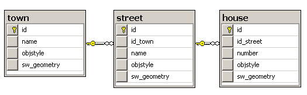
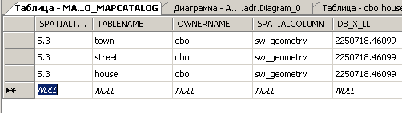
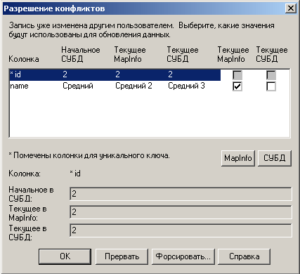

Клиент-сервер технология для MapInfo
Оригинал опубликован в 2011 году на новом сайте http://mapbasic.ru, посвященном разработке программ на языке MapBasic и готовым решениям для MapInfo. В статье рассматриваются простой, но действенный алгоритм построения клиент-серверных связей, позволяющих одновременное редактирование таблицы MapInfo несколькими пользователями.
Автор: Бирючков Дмитрий Анатольевич © 2011
Режим эконом
Одновременное редактирование таблицы MapInfo несколькими пользователями. Да, такая задача часто возникает и её решение возможно только при хранении таблиц на серверах баз данных. ORACLE, MS SQL, Informix, MapInfo Spatialware. Знакомые всем термины, серьёзные цены за комплект железо + софт + внедрение. В этой статье хочу показать некий промежуточный вариант, промежуточный между настольной MapInfo + файловый сервер и MapInfo + MS SQL + Spatialware.
Практическое описание когда-то давно было опубликовано на форуме www.geomatica.kiev.ua. К сожалению, форум-первоисточник сейчас не доступен.
Суть технологии сводится к созданию таблиц MSSQL с пространственными данными, то есть с метрикой объектов, хранимой в поле типа image и таблицей метаданных MapInfo_MapCatalog. Принципы те же что и при работе SpatialWare, но только без него :-) Обратите внимание – только принципы! Предлагаемая технология не поддерживает пространственные запросы на стороне сервера, это основное отличие. Но, предлагаемая технология позволяет осуществлять многопользовательское редактирование таблиц плюс дополнительные возможности SQL сервера по поддержанию целостности данных, протоколированию изменений, архивированию и т.д.
Итак, например, что имеется на входе:
-
Microsoft SQL Server 2005 Express Edition
SQL Server Express предназначен для упрощенного развертывания и быстрого создания прототипов; его можно получить бесплатно и свободно распространять в составе приложений. -
Microsoft SQL Server Management Studio Express
Microsoft SQL Server Management Studio Express (SSMSE) – простое в использовании графическое средство для управления базами данных SQL Server 2005 Express Edition. - MapInfo Professional 8.5 SCP
Создам для примера простую базу данных на MS SQL под названием «adr».
- town – населенный пункт. Поля: id – код НП (автоинкрементное поле, первичный ключ); name – название; objstyle – поле для хранения стиля объекта (предложение Style для MapInfo); sw_geometry – поле типа «image» для хранения метрики объекта в бинарном виде.
- street – улица. Поля: id – код улицы (автоинкрементное поле, первичный ключ); id_town – код населенного пункта (внешний ключ); name – название; objstyle – поле для хранения стиля объекта (предложение Style для MapInfo); sw_geometry – поле типа «image» для хранения метрики объекта в бинарном виде.
- house – дом. Поля: id – код дома (автоинкрементное поле, первичный ключ); id_street – код улицы (внешний ключ); number – номер дома; objstyle – поле для хранения стиля объекта (предложение Style для MapInfo); sw_geometry – поле типа «image» для хранения метрики объекта в бинарном виде.
Кроме того создается таблица MapInfo_MapCatalog хранения метаданных для каждой таблицы с объектами.
MapInfo_MapCatalog можно создать как вручную, так и используя программу EasyLoader, поставляемую вместе с дистрибутивом MapInfo.
Не буду подробно останавливаться на процедурах создания базы данных. Этот вопрос больше относится к администрированию MS SQL. Рассматриваемые в статье данные вы можете непосредственно загрузить на свой компьютер:
Архив базы данных MS SQL 198 KB
Скрипт создания структуры БД 1.86 KB
Для MapInfo обязательно должна быть установлена поддержка баз данных MS SQL. Через панель инструментов «СУБД» осуществляется работа с «Удаленными таблицами» («Linked tables»). «Удаленными» не в смысле «стёртыми», а в смысле что они располагаются «далеко» :-) Так, например, выглядит файл таблицы town.tab:
!table !version 400 !charset WindowsCyrillic Definition Table Type LINKED Charset "WindowsCyrillic" Fields 3 id Integer ReadOnly ; id_town Integer ; name Char (50) ; begin_metadata "\DATALINK" = "" "\DATALINK\ConnectionString" = "Description=adr;DRIVER=SQL Server;SERVER=WORKSTATION\SQLEXP;UID=Admin;APP=Microsoft Data Access Components;WSID=WORKSTATION;DATABASE=adr;Network=DBMSLPCN;Trusted_Connection=Yes" "\DATALINK\Query" = "select ""id"", ""id_town"", ""name"", ""objstyle"", ""OBJECT"" from ""adr"".""dbo"".""street""" "\IsReadOnly" = "FALSE" end_metadata
Обратите внимание, что поле «id» в MapInfo недоступно для редактирования, это первичный ключ, по которому обновляются данные. Значения этому полю автоматически присваиваются на стороне сервера. Для новой строки (объекта), значение этого поля MapInfo получает при первом «обновлении содержимого таблицы СУБД».
Поля «objstyle» и «sw_geometry» и вовсе явно не прописаны в tab файле. Значение поле «objstyle» MapInfo понимает как предложение «Style …», а «sw_geometry» эквивалентно понятию «obj».
Архив с образцом трех таблиц в формате MapInfo 24.9KB
В целом получается следующая картина: имеется реляционная БД на стороне сервера и локальная копия таблиц в формате MapInfo на стороне клиента. Редактирование данных как метрики, так и семантики происходит в MapInfo на стороне клиента. На момент сохранения изменений данные о редактированных объектах отправляются с клиента на сервер. При необходимости происходит синхронизация, то есть и обратный процесс — все изменения хранимые на сервере отправляются в локальную копию.
В случае ситуации редактирования одного объекта несколькими пользователями, включается механизм разрешения конфликтов.
Окно разрешения конфликтов включается у пользователя сделавшего изменения последним.
Перечислю плюсы такой технологии хранения и обработки данных MapInfo:
- Возможность многопользовательского редактирования таблиц.
- Ссылочная целостность БД на уровне семантических данных. Если таблицы street и town связаны по коду города, вы не сможете внести некорректный код города в таблицу улиц. Сервер выдаст ошибку на момент попытки сохранения некорректных данных.
- Централизованное хранения данных. Возможность средствами сервера производить операции архивирования данных не прекращая работы с БД.
- Протоколирование изменений данных. Средствами сервера, при наличии триггеров на операции INSERT, UPDATE, DELETE. Например, создается копии таблицы town под названием town_copy. В town_copy создаются два служебных поля user_name и date_update. Перед любым изменением данных для town, вначале копия ещё не измененных данных отправляется в town_copy с автоматической фиксацией имени пользователя и времени редактирования объекта.
Есть и определенные ограничения.
- Таблица СУБД (связанная таблица) MapInfo не поддерживает прямоугольники со скругленными углами, эллипсы, дуги и объекты типа text.
- При каждом сохранении данных, MapInfo предлагает обновить связанную таблицу. Когда объем таблицы достигает сотен тысяч записей, обновление локальной копии может занимать довольно длительное время.
Для последнего пункта могу предложить возможное решение проблемы с использованием метаданных связанных таблиц. На примере рассматриваемых таблиц – таблицы town (600 объектов), street (7400 объектов), house (203000 объектов). Каждый пользователь одновременно работает только с одним населенным пунктом, редактируя таблицы street и house. Ограничим количество объектов таблиц street и house только объектами находящимися на территории населенного пункта с id = 1.
Всего четыре команды Mapbasic.
MetaData Table street SetKey "\DATALINK\Query" To "Select * From dbo.street Where id_town = 1" Server Refresh street MetaData Table house SetKey "\DATALINK\Query" To "Select * From dbo.house Where id_street In (Select id From dbo.street Where id_town = 1)" Server Refresh house
Получаем минимальное время обновления таблиц street и house, так как количество объектов в них сократилось до десятков и сотен. Естественно, необходимо вручную контролировать значение семантических полей id_town и id_street. Иначе рискуем потерять объекты из видимости данной выборки. Вернуть всё на место тоже не долго.
MetaData Table street SetKey "\DATALINK\Query" To "Select * From dbo.street" Server Refresh street MetaData Table house SetKey "\DATALINK\Query" To "Select * From dbo.house" Server Refresh house
Как вариант, можно создавать в таблицах служебное поле user_edit с именем текущего пользователя БД в качестве значения по умолчанию:
ALTER TABLE [dbo].[town] ADD CONSTRAINT [DF_town_user_edit] DEFAULT (user_name()) FOR [user_edit]
Выборку через метаданные таблицы производить по имени пользователя. Так как имя пользователя на стороне сервера фиксируется автоматически, в этом случае можно не отслеживать семантику ключевых полей при работе в MapInfo.
Ещё раз обращаю внимание, что описываемая технология не заменяет SpatialWare по причине отсутствия пространственных запросов на стороне сервера. Тем ни менее достойна внимания для возможности многопользовательского редактирования данных и централизованного хранения таблиц MapInfo.
Оригинал:
Клиент-сервер технология для MapInfo. Режим эконом